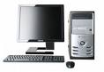
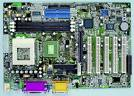
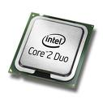
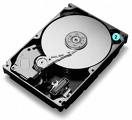
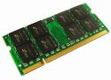
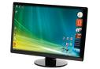
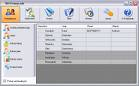

najedź kursorem na obrazek, aby go zmienić
Komputery całkowicie zdominowały rynek sprzętu elektronicznego. Gdzie się nie obejrzymy, na każdym kroku możemy je spotkać. Dostarczają nam rozrywki, pomagają w pracy, a nawet tę pracę za niektórych wykonują. Nie każdy wie jak on jest zbudowany. Na tej stronie przedstawiam budowę komputera oraz poszczególnych jego komponentów i podzespołów.
Czy wiesz na jakie poszczególne elementy składa się budowa komputera? Jeśli nie, to poniżej przedstawiamy podstawowe komponenty komputera wraz z nazwami.
- Monitor
- Płyta główna
- Procesor
- Pamięć operacyjna (RAM)
- Napęd optyczny (CD/DVD)
- Dysk twardy (HDD)
- Karta graficzna
- Karta dźwiękowa
- Klawiatura
- Mysz
najedź kursorem na obrazek, aby go powiększyć

Płyta główna (ang. mainboard) – najważniejsza płyta drukowana urządzenia elektronicznego, na której zamontowano najważniejsze elementy urządzenia, umożliwiająca komunikację wszystkim pozostałym komponentom i modułom.
W komputerze na płycie głównej (ang. motherboard) znajdują się procesor, pamięć operacyjna lub gniazda do zainstalowania tych urządzeń oraz gniazda do zainstalowania dodatkowych urzadzeń składujących (dyski twarde, napędy optyczne itp.) i zasilacza. W niektórych konstrukcjach także innych urządzeń zewnętrznych (port szeregowy, port równoległy, USB, złącze klawiatury, złącze myszy).
Koncepcję zbudowania komputera osobistego wyposażonego tylko w minimum potrzebnych urządzeń zapoczątkowała firma IBM wprowadzając komputer osobisty, zwany też PC.
 Karta graficzna, często określana też mianem akcelerator grafiki, to element komputera tworzący sygnał dla monitora. Podstawowym zadaniem karty graficznej jest przechowywanie informacji o tym jak powinien wyglądać obraz na ekranie monitora i odpowiednim sterowaniu monitorem. Pierwsze karty graficzne potrafiły jedynie wyświetlać znaki alfabetu łacińskiego ze zdefiniowanego w pamięci karty generatora znaków - tryb tekstowy. Nowoczesne procesory graficzne udostępniają wiele funkcji ułatwiających i przyśpieszających pracę programów. Możliwe jest narysowanie odcinka, trójkąta, wieloboku, wypełnienie ich zadanym kolorem lub wzorem, tzw. akceleracja 2D. Większość kart na rynku posiada również wbudowane funkcje ułatwiające tworzenie obrazu przestrzeni trójwymiarowej, tzw. akceleracja 3D. Niektóre posiadają zaawansowane algorytmy potrafiące na przykład wybrać tylko widoczne na ekranie elementy z przestrzeni.
Karta graficzna, często określana też mianem akcelerator grafiki, to element komputera tworzący sygnał dla monitora. Podstawowym zadaniem karty graficznej jest przechowywanie informacji o tym jak powinien wyglądać obraz na ekranie monitora i odpowiednim sterowaniu monitorem. Pierwsze karty graficzne potrafiły jedynie wyświetlać znaki alfabetu łacińskiego ze zdefiniowanego w pamięci karty generatora znaków - tryb tekstowy. Nowoczesne procesory graficzne udostępniają wiele funkcji ułatwiających i przyśpieszających pracę programów. Możliwe jest narysowanie odcinka, trójkąta, wieloboku, wypełnienie ich zadanym kolorem lub wzorem, tzw. akceleracja 2D. Większość kart na rynku posiada również wbudowane funkcje ułatwiające tworzenie obrazu przestrzeni trójwymiarowej, tzw. akceleracja 3D. Niektóre posiadają zaawansowane algorytmy potrafiące na przykład wybrać tylko widoczne na ekranie elementy z przestrzeni.

Procesor (ang. processor) nazywany często CPU (ang. Central Processing Unit) - urządzenie cyfrowe sekwencyjne potrafiące pobierać dane z pamięci, interpretować je i wykonywać jako rozkazy. Wykonuje on bardzo szybko ciąg prostych operacji (rozkazów) wybranych ze zbioru operacji podstawowych określonych zazwyczaj przez producenta procesora jako lista rozkazów procesora. Współczesne procesory (zwane mikroprocesorami) wykonywane są zwykle jako układy scalone zamknięte w hermetycznej obudowie, często posiadającej złocone wyprowadzenia (stosowane ze względu na własności stykowe tego metalu). Ich sercem jest monokryształ krzemu, na który naniesiono techniką fotolitografii szereg warstw półprzewodnikowych, tworzących, w zależności od zastosowania, sieć od kilku tysięcy do kilkuset milionów tranzystorów. Połączenia wykonane są z metalu (aluminium, miedź). Ważnym parametrem procesora jest rozmiar elementów budujących jego strukturę. Im są one mniejsze tym niższe jest zużycie energii, napięcie pracy oraz wyższa częstotliwość pracy. Fabryki procesorów muszą posiadać pomieszczenia o niezwykłej czystości, co jest bardzo kosztowne.

Dysk twardy – jeden z typów urządzeń pamięci masowej. Nazwa "dysk twardy" (hard disk drive) powstała w celu odróżnienia tego typu urządzeń od tzw. "dysków miękkich", czyli dyskietek (floppy disk), w których nośnik magnetyczny naniesiono na elastyczne podłoże, a nie jak w dysku twardym na sztywne. Pierwowzorem twardego dysku jest pamięć bębnowa. Pierwsze dyski twarde takie, jak dzisiaj znamy, wyprodukowała w 1980 r. firma Seagate. Dysk przeznaczony do mikrokomputerów miał pojemność 5 MB, 5 razy więcej niż standardowa dyskietka. Pojemność dysków wynosi od 5 MB (przez 10MB, 20MB i 40MB - dyski MFM w komputerach klasy XT 808x i 286, współcześnie zaś dyski kilkusetmegabajtowe w komputerach osobistych należą do rzadkości), najczęściej posiadają rozmiar nawet kilkuset (powyżej 400 GB) GB, (w laptopach 20-260 GB). Dla dysków twardych najważniejsze są parametry: pojemność, szybkość transmisji danych, czas dostępu, prędkość obrotowa talerzy (obr/min.).

RAM (ang. Random Access Memory) - jest to podstawowy rodzaj pamięci cyfrowej zwany też pamięcią użytkownika lub pamięcią o dostępie swobodnym. Choć nazwa sugeruje, że oznacza to każdą pamięć o bezpośrednim dostępie do dowolnej komórki pamięci (w przeciwieństwie do pamięci o dostępie sekwencyjnym, np. rejestrów przesuwnych), to nazwa ta ze względów historycznych oznacza tylko te rodzaje pamięci o bezpośrednim dostępie, które mogą być też zapisywane przez procesor, a wyklucza pamięci ROM (tylko do odczytu), pomimo iż w ich przypadku również występuje swobodny dostęp do zawartości. W pamięci RAM przechowywane są aktualnie wykonywane programy i dane dla tych programów, oraz wyniki ich pracy. Zawartość większości pamięci RAM jest tracona w momencie zaniku napięcia zasilania, dlatego wyniki pracy programów muszą być zapisane na jakimś nośniku danych. Pamięć RAM jest stosowana głównie jako pamięć operacyjna komputera, jako pamięć niektórych komponentów (procesorów specjalizowanych) komputera (np. kart graficznych, dźwiękowych, itp.), jako pamięć danych sterowników mikroprocesorowych.
 Karta dźwiękowa - bezpowrotnie minęły czasy kiedy to z naszego peceta wydobywał się charakterystyczny klik, którego nie jestem w stanie nazwać, lecz pewnie ci bardziej doświadczeni przedstawiciele naszego społeczeństwa świetnie go pamiętają. Różnorodność funkcji jakie oferuje karta dźwiękowa jest bardzo duża. Dzięki niej możemy oglądnąć film, posłuchać ulubionej muzyki czy porozmawiać ze znajomymi przez skype. Nieraz efekty jakich możemy doświadczyć są porażające. Przy dobrym sprzęcie podczas oglądania filmu możemy usłyszeć świst kuli przelatującej nad lewym uchem, a nad głową usłyszeć trzepotanie skrzydeł motyla. Każdy ma w swoim komputerze kartę dźwiękową, lecz nie każdy może coś więcej powiedzieć na temat budowy czy jakości dźwięku, dlatego postaramy się przybliżyć jej budowę i funkcje.
Karta dźwiękowa - bezpowrotnie minęły czasy kiedy to z naszego peceta wydobywał się charakterystyczny klik, którego nie jestem w stanie nazwać, lecz pewnie ci bardziej doświadczeni przedstawiciele naszego społeczeństwa świetnie go pamiętają. Różnorodność funkcji jakie oferuje karta dźwiękowa jest bardzo duża. Dzięki niej możemy oglądnąć film, posłuchać ulubionej muzyki czy porozmawiać ze znajomymi przez skype. Nieraz efekty jakich możemy doświadczyć są porażające. Przy dobrym sprzęcie podczas oglądania filmu możemy usłyszeć świst kuli przelatującej nad lewym uchem, a nad głową usłyszeć trzepotanie skrzydeł motyla. Każdy ma w swoim komputerze kartę dźwiękową, lecz nie każdy może coś więcej powiedzieć na temat budowy czy jakości dźwięku, dlatego postaramy się przybliżyć jej budowę i funkcje.

Monitor - urządzenie wyjściowe, podłączone do komputera będące źródłem światła, wyświetlające na własnym ekranie obraz oglądany z drugiej strony przez oglądającego. Wyróżnia się monitory lampowe (kineskopowe) - CRT, monitory oparte na ciekłych kryształach (LCD), oraz monitory plazmowe.
Programy:

Określenie program komputerowy jest często używane zamiennie z określeniami "oprogramowanie" (ang. software) i "aplikacja". Pierwszy z tych terminów podkreśla rynkowy charakter programów - programy (lub ich zespoły) często w połączeniu z bibliotekami, dodatkowymi danymi, wyróżniającą się nazwą i wsparciem producenta (dostawcy) stanowią produkt handlowy. Poprzez aplikację natomiast często rozumie się oprogramowanie bliskie użytkownikowi, to znaczy takie, z którym komunikuje się (często za pośrednictwem przyjaznego interfejsu użytkownika) by wykonać określone zadania (np. zredagować dokument).
Specjalnym rodzajem programu komputerowego jest system operacyjny (występujący często jako zbiór programów). Sprawuje kontrolę nad sprzętem. Zarządza zasobami systemu komputerowego (pamięć, czas procesora, dostęp do urządzeń peryferyjnych) przydzielając je według określonych kryteriów uruchamianym programom. Specjalne oprogramowanie typu firmware nazywa się BIOSem. Program ten przygotowuje sprzęt do użycia i uruchamia program rozruchowy, który ładuje do pamięci system operacyjny i uruchamia go, tym samym przekazując mu kontrolę nad komputerem. Jeżeli program nie jest zapisany w postaci binarnej, ale w postaci kodu źródłowego czytelnego dla człowieka, nie może być bezpośrednio wykonany przez procesor. Możliwe są dwa rozwiązania. Pierwsze z nich korzysta z pomocy specjalnego programu nazywanego kompilatorem. Kompilator tłumaczy kod źródłowy zapisany w danym języku programowania na kod maszynowy, dzięki czemu możliwe staje się jego późniejsze uruchomienie. Drugim rozwiązaniem jest skorzystanie z programu interpretera. Interpreter na bieżąco odczytuje kod źródłowy, analizuje go i wykonuje kolejne porcje przetłumaczonego kodu. Programy przeznaczone do interpretacji często nazywane są skryptami.
Osobę zajmującą się programowaniem nazywa się programistą. W inżynierii oprogramowania programowanie jest także przedstawiane jako jeden z etapów powstawania i rozwoju oprogramowania. W dziedzinie programowania wyróżnia się pewne modele działania takie, jak programowanie zespołowe czy programowanie parami. W dobie spadku cen sprzętu komputerowego, dostępności oprogramowania i literatury programowanie może mieć również charakter hobbystyczny. W ciągu lat programowanie stało się rozległą dziedziną o silnych podstawach teoretycznych. Związane są z nim pojęcia takie jak: algorytm, struktury danych, metody numeryczne, programowanie obiektowe, kryptografia i wiele innych.
Pisma:
naciśnij obrazek pisma, aby przejść na jego stronę
"PC World"

PC World - wysokonakładowy miesięcznik komputerowy powstały w 1992 roku na bazie licencji amerykańskiego miesięcznika PC World i wychodzącego w drugiej połowie lat 80. miesięcznika Komputer. Do końca roku 2008 nosił nazwę PC World Komputer. Wydawany jest w Warszawie przez IDG Poland.
Ze względu na formalną kontynuację miesięcznika Komputer, w maju 2006 miesięcznik obchodził 20-lecie istnienia. Związek Kontroli Dystrybucji Prasy podaje średnią sprzedaż egzemplarzową wynoszącą 57 928 [1].
Kolejni redaktorzy naczelni: Marek Młynarski (1992), Krzysztof Matey (1992-1999), Lech Zdanowicz (1999-2006), Maciej Zdanowicz (2006-2007), Krzysztof Arkuszewski (pełniący obowiązki, 2007-2008), Grzegorz Eider (2008), Łukasz Bigo (2008-)
"PC Format"

PC Format - miesięcznik komputerowy wydawany od drugiej połowy lat 90. XX wieku przez wydawnictwo Bauer. Skupia się na testach produktów oraz na poradach na temat korzystania z komputera. Jest czasopismem popularnym, skierowanym do wszystkich osób używających komputera do pracy i rozrywki. Pod względem treści i sposobu prezentacji, w największym stopniu przypomina dwutygodnik Komputer Świat i głównie z tym pismem PC Format konkuruje.
Związek Kontroli Dystrybucji Prasy podaje średni nakład jednorazowy numerów 9/2006 - 8/2007 na poziomie 201 620 egzemplarzy, średnią sprzedaż egzemplarzową - 152 888. Czytelnictwo wedle Polskich Badań Czytelnictwa wynosi 727 000. Plasuje to pismo na pierwszym miejscu na polskim rynku czasopism komputerowych pod względem sprzedaży i nakładu.
"CD Action"

CD-Action – polski magazyn poświęcony tematyce gier komputerowych.
Magazyn ukazuje się w cyklu nie będącym dokładnie miesięcznym, gdyż kolejne numery pisma ukazują się co 28 dni. W rezultacie corocznie wychodzi na rynek trzynaście numerów, w tym jeden specjalny. Obecnie ukazuje się w każdy pierwszy wtorek miesiąca. Standardowa objętość numeru to 148 stron, lecz czasem ulega ona zwiększeniu. Od grudnia 2006 roku wydawany tylko w wersji z jedną dwuwarstwową płytą DVD (wcześniej pojawiały się wersje z czterema płytami CD dla czytelników nie posiadających czytników DVD). Rysownikami komiksów dla tego magazynu są Marek Lenc i Błażej Wiśniewski.